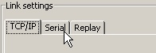
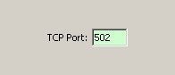
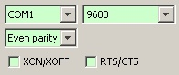

When the MODBUS slaves have been defined, the project has to be run. Once the project is running, it waits for incoming MODBUS requests, processes them and reply to the master.
Running the project is only a matter of configuring the appropriate
COM port or TCP/IP connection. This section will also present the
Learn
mode, which can very efficiently create a complex project
from scratch.
ModbusPal currently supports TCP/IP and SERIAL communication. The system running ModbusPal will usually be connected to a real MODBUS master device.
The desired communication medium is selected by clicking on the
corresponding tab in the Link settings
pane of the main window.

Note: serial communication requires that RxTx is installed on the computer.
Each medium has its own set of parameters, with standard default values.
When the parameters are set to match those of the real master device,
clicking on the Run
button will make ModbusPal waiting for
incoming MODBUS requests.
Each time a MODBUS request is received, the LED-like icon flickers:
To stop the project from running, click on the Run
button again.

Select the TCP/IP
tab to use TCP/IP communication. The only
parameter to set is the TCP port number on which incoming connections
will be made. The standard MODBUS port is selected by default (502).

Select the Serial
tab in order to use serial communication.
All usual COM settings can be modified, but the standard MODBUS
configuration is selected by default.
Note: serial communication requires that RxTx is installed on the computer. Check related information on this page.
Information of the Replay
, part of the Record and replay
functionality,can be found in
this page.
The Learn mode is one of the key differentiators of ModbusPal. The statement is that creating a complete project including many MODBUS slaves is very time consuming (and boring!). When the Learn mode is activated, ModbusPal will take care of creating any resources that the project is missing.
The Learn mode is toggled ON and OFF by clicking of the Learn
button.
Imagine that you just start a new project. You only have configured the TCP/IP or serial settings, your MODBUS master is connected to your PC and ModbusPal is running.
At this point, any request of your MODBUS master will end up in errors, because you haven’t defined any MODBUS slave yet. If you activate the Learn mode, each time that ModbusPal receives a request it will:
It means that your entire project is automatically created “on-the-fly” by the MODBUS master’s requests. When you’re satisfied with the result, you should disable the Learn mode.